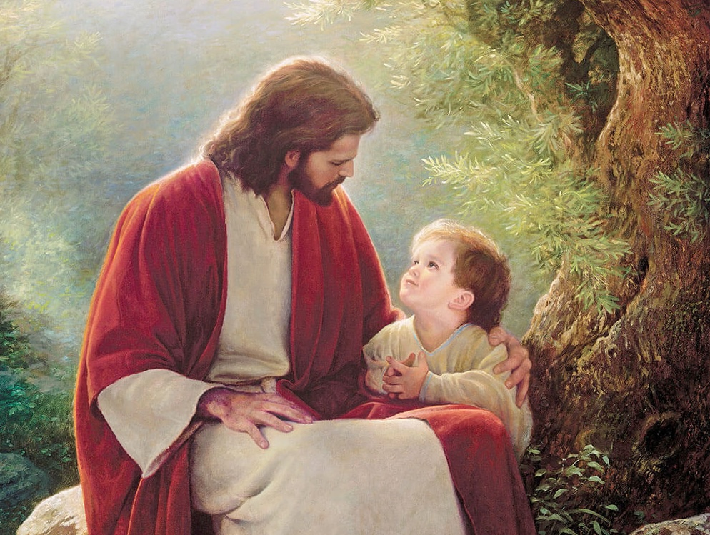
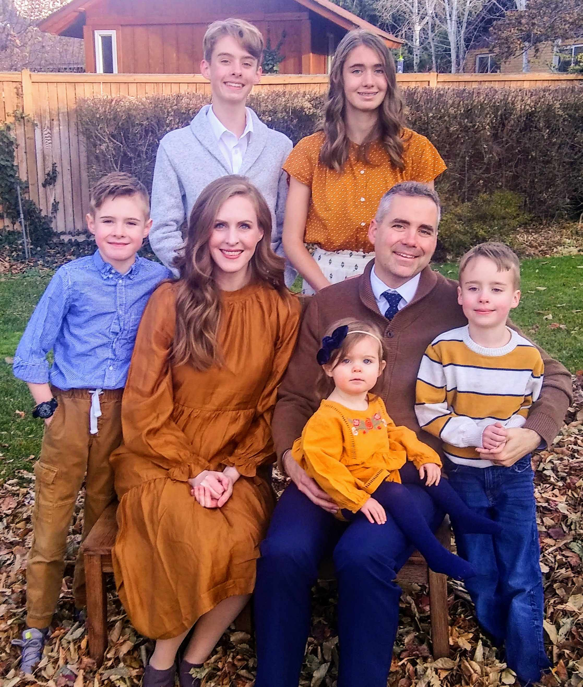

Upcoming Events
Here's what's coming up for our Primary. Check out our ward website for other events.
Select a color to filter events — select it again to show all.
-
JAN 01Friday
New Year's Day
Happy New Year!
-
APR 3-4Sat & Sun
General Conference
No primary this weekend, but listen to our prophet and general authorities speak anywhere with an internet connection or radio signal.
-
OCT 2-3Sat & Sun
General Conference
No primary this weekend, but listen to our prophet and general authorities speak anywhere with an internet connection or radio signal.
-
TBA TBASaturday
Primary Program Rehearsal
Come together to practice your lines and our songs!
-
TBA TBASunday
Primary Program
Showcasing some of the things we've learned in primary this year. Thanks for supporting your kids!
No events in this category right now! Check back later for updates or check out the 9th ward website.
Singing Time
Practicing at home can help songs stick!
🎵 Get a Glimpse
This Week's Songs
Get a glimpse into what we're singing in Primary this week and next week →
🎵 This Year
All 2027 Songs Playlist
View all the songs recommended this year from Come, Follow Me →
🎵 Casual Listening
All 2026 Songs Playlist
Revisit last year's recommended CFM Primary songs →
🎵 Explore
Church Music Library
Explore and listen to the church's wide array of music. →
Come, Follow Me 2027 Primary Songs
Each link opens the official lyrics or sheet music on churchofjesuschrist.org.
February
March
April
May
June
July
August
September
October
November
December

This Week's Gospel Study
Follow along with the family at home. Tap below for the current Come, Follow Me lesson on the official Church website.
This Week's "Come, Follow Me" Lesson → Come, Follow Me Resources →Meet Your Leaders
We love your kids and are here to help them feel God's love!
Let us know if you have any questions.

📞 To contact a member of the presidency or the music leader, please look up our details directly in the Church Tools app or the online Ward Directory.